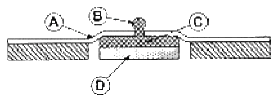
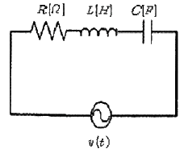
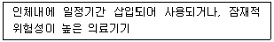
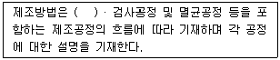
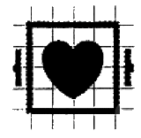
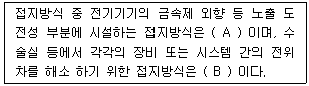
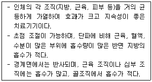
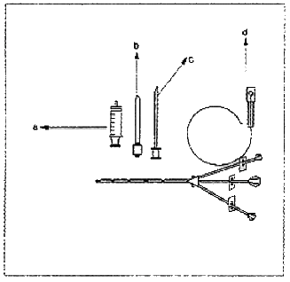
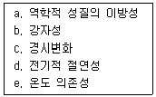

의공기사 (2008-09-07 기출문제)
1과목: 기초의학 및 의공학
1. 다음 중 세포 내 구조인 리소즘(lysosome)의 역할이 옳은 것은?
- 영양소로부터 에너지를 추출
- 독성 물질을 해독하는 등의 세포 보호기능
- 여러 세포소기관들과의 상호작용을 통하여 단백질을 합성하는 역할
- 소화효소를 함유하여 노화된 세포소기관이나 부스러기 같은 물질들을 분해
(정답률: 89%)

2. 우리 몸의 말초신경계 중에서 민무늬근육, 심장근육 및 생의 작용을 조절하는 신경계통은?
- 음신경계(somatic nerve system)
- 운동신경계(motor nerve system)
- 중추신경계(central nerve system)
- 자율신경계(autonomic nerve system)
(정답률: 87%)
3. 다음 중 압전 센서가 사용되는 장치가 아닌 것은?
- 초음파 영상장치
- 초음파 쇄석기
- 호흡 감시장치
- 심전도계
(정답률: 78%)
4. 다음 중 골격근이 체중에서 차지하는 비율은 약 몇 [%]인가?
- 10[%]
- 20[%]
- 30[%]
- 40[%]
(정답률: 86%)
5. 최대한의 노력으로 들이마셨을 때, 폐내에 존재하는 공기의 양을 무엇이라고 하는가?
- 폐활량(Vital capacity)
- 총폐용량(Total lung caoacity)
- 흡식용량(Inspiratory capacity)
- 기능적 잔기용량(Functional residual capacity)
(정답률: 79%)
6. 다음 중 단일 심근의 전도 순서가 옳은 것은?
- SA node → 심방 → AV node → HIS bundle → Purkinje fiber → 심실전체
- SA node → 심방 → 심실 → AV node → Purkinje fiber → transition cell
- 동방결절→심방→ AV node → Purkinje fiber → 심실전체 → gap junction
- 동방결절→심방→ AV node → gap junction → Purkinje fiber → 심실전체
(정답률: 90%)
7. 다음 그림은 일회용 금속판 전극(Disposable electrode)의 단면을 나타낸 것이다. 그림에서 전해질겔(Electrolyte gel)은 어느 부분인가?

- ⓐ부분
- ⓑ부분
- ⓒ부분
- ⓓ부분
(정답률: 79%)
8. 다음 중 미세전극(Microelectrode)에 대한 설명으로 옳지 않은 것은?
- 이 전극의 길이는 0.⑤ ~ 10[μm] 정도이다.
- 세포의 활등전위를 측정하기 위한 전극이다.
- 금속 미세전극, 유리 마이크로피펫 미세전극 등이 있다.
- 유리 모세관 안에 전해질 용액을 포함하는 것을 금속 미세전극이라 한다.
(정답률: 68%)
9. 같은 강도의 자극이 반복적으로 주어질 때, 탈분극의 크기를 줄여 활동전위 발생 횟수를 줄이는 작용을 무엇이라 하는가?
- 확산(diffusion)
- 순응(adaptation)
- 전도(propagation)
- 기외수축(extrasystole)
(정답률: 89%)
10. 다음 중 방사능 붕괴 시 나타나는 현상과 거리가 먼 것은?(오류 신고가 접수된 문제입니다. 반드시 정답과 해설을 확인하시기 바랍니다.)
- alpha decay
- x-ray decay
- positron decay
- gamma decay
(정답률: 66%)
11. 평행판 모양의 용량성 센서에서 정전 용량을 변화 시킬 수 있는 방법이 아닌 것은?
- 판의 유효 넓이
- 판 사이의 간격
- 유전체
- 전하량
(정답률: 86%)
12. 다음 윤활관절 중 한 면에서의 굽힘과 폄에 해당하는 운동만 가능한 관절은?
- 평면관절(plane joints)
- 중쇠관절(pivol joints)
- 경첩관철(hinge joints)
- 안장관절(saddle joints)
(정답률: 91%)
13. 직육면체의 금속에 열을 가하고 길이의 변화를 따른 저항을 측정하였다. 열에 의해 금속의 길이는 20[%] 늘어났고, 면적은10[%] 증가했다. 저항계수가 열에 의해 10[%] 증가했다면 총 저항의 변화율은?
- 10% 감소
- 10% 증가
- 20% 감소
- 20% 증가
(정답률: 83%)
14. 초음파 영상장치에서 초음파를 혈관 내에 쐈을 때, 혈구 세포에 반사되어 돌아오는 초음파의 주파수 변화를 측정하여 혈류의 속도를 측정하는데 이 때 사용되는 물리이론은?
- 도플러 효과
- 홀 효과
- 광전 효과
- 전계 효과
(정답률: 80%)
15. 광센서를 이용하여 심박수를 검출할 수 있는 방법은?
- ECG
- EMG
- PPG
- EOG
(정답률: 68%)
16. 동잡음(motion artifact)을 줄이기 위한 방법으로 적절하지 않은 것은?
- 전극과 피부간의 움직임을 최소화 한다.
- 움직임이 적은 부분에 전극을 부착한다.
- 전극과 피부간의 접촉면을 건조하게 유지한다.
- 전극 주위의 전극선을 움직이지 않도록 고정한다.
(정답률: 80%)
17. 광센서의 광원으로 휴대를 요하는 경우 LED가 가장 유용한 이유가 아닌 것은?
- 소형
- 저렴한 가격
- 큰 전원으로 작동
- 다양한 빛을 선택
(정답률: 90%)
18. Ag-AgCl(은-염화은) 전극의 특성이 아닌 것은?
- 분극 전극이다.
- 전해질을 필요로 한다.
- 저항성 특성이 나타난다.
- 저주파 신호측정에 적합하다.
(정답률: 68%)
19. 다음 중 온도를 측정하는 센서로만 이루어진 것은?
- LED-서미스터
- 서미스터-열전쌍
- 열전쌍-게이지센서
- 게이지센서-LED
(정답률: 74%)
20. 피부의 가장 외부에 위치하며, 케라틴(Keratin)이라는 단백질로 구성되어 있어 전극과 피부표면의 등가회로에서 가장 높은 저항을 가지고 있고, 전극 부착시 제거하여 측정하도록 하는 것은?
- 진피층
- 각질층
- 기저층
- 과립층
(정답률: 88%)
2과목: 의용전자공학
21. 2분 동안에 480[J]의 일을 하였다면 이 때 소비전력은 몇 [W] 인가?
- 2[W]
- 4[W]
- 6[W]
- 8[W]
(정답률: 75%)
22. 클럭 펄스(clock pulse)의 주기만큼 입력신호가 지연되어 출력에 나타나는 시프트레지스터(shift register)의 역할을 하는 플립플롭(flip-flop)은?
- D 플립플롭
- T 플립플롭
- JK 플립플롭
- RS 플립플롭
(정답률: 68%)
23. 다음 중 생체계측기기의 비선형성 특성이 아닌 것은?
- 포화(saturation)
- 불감대(dead zone)
- 브레이크다운(breakdown)
- 감도표류(sensitivity drift)
(정답률: 75%)
24. 이상적인 연산증폭기가 이상적인 차동증폭기로 동작하기 위한 CMRR은?
- 0
- 1
- β
- ∞
(정답률: 82%)
25. 차동증폭기에서 차동신호에 대한 전압이득은 Ad 이고, 동상신호에 대한 전압이득이 Ac 일 때 동상신호 제거비(CMRR)는?
- Ac + Ad
- Ac - Ad
- Ac / Ad
- Ad / Ac
(정답률: 83%)
26. 입·출력 인터페이스에 대한 설명 중 옳지 않은 것은?
- 반드시 CPU 내에 존재한다.
- 데이터 형식상의 차이를 맞춘다.
- CPU와 입·출력 장치 간의 등작속도를 맞춘다.
- CPU와 입·출력 장치 사이에 존재하여 데이터의 전송이 원활하게 이루어지도록 하게 하는 역할을 한다.
(정답률: 68%)
27. 다음 R-L-C 직렬회로에서 R=4[Ω], XL=9[Ω], XC=6[Ω]이고, 전압 V=100[V]의 사인파 교류전압을 인가했을 때 이 회로에 흐르는 전류[A]의 크기는?

- 10[A]
- 15[A]
- 20[A]
- 25[A]
(정답률: 68%)
28. 펄스의 진폭과 폭은 일정하고 펄스의 반복 주파수를 신호에 따라서 변화시키는 변조를 무엇이라 하는가?
- 펄스진폭변조(PAM)
- 펄스폭변조(PWM)
- 펄스주파수변조(PFM)
- 펄스수변조(PNM)
(정답률: 87%)
29. 다음 중 맥파(pulse wave)의 종류가 아닌 것은?
- 혈류맥파
- 직경맥파
- 압맥파
- 횡맥파
(정답률: 69%)
30. 다음 중 배전압 정류회로의 특성이 아닌 것은?
- 고전압용이다.
- 승압 변환기가 필요 없다.
- 큰 전류에 사용이 가능하다.
- 용량이 큰 커패시터를 사용한다.
(정답률: 65%)
31. 100회 감은 코일과 쇄교하는 자속이 2초 동안에 0.5[Wb]에서 0.3[Wb]로 감소하였다. 이때 유기되는 기전력[V]은?
- 5[V]
- 10[V]
- 15[V]
- 20[V]
(정답률: 60%)
32. 전위차계(potentiometer)와 스트레인게이지(straingage) 변환기의 공통적인 원리는?
- 저항성
- 유동성
- 온도성
- 용량성
(정답률: 75%)
33. 플립플롭(flip-flop) 6개로 구성된 계수기(counter)가 가질 수 있는 최대 2진 상태의 수는?
- 6
- 24
- 32
- 64
(정답률: 85%)
34. 다음 중 CPU 내부의 처리할 명령이나 연산의 결과값 등을 임시로 기억하는 장소로 메모리 중에 속도가 빠른 특징을 가진 것은?
- ROM
- RAM
- 광디스크
- 레지스터
(정답률: 77%)
35. 다음 중 아날로그 신호에 대한 설명으로 옳은 것은?
- 음성과 같은 이산적인 변이형태를 지닌 생체신호
- 전류와 시간에 의존하여 이산적으로 변화하는 물리량
- 전압과 시간에 의존하여 이산적으로 변화하는 물리량
- 전압과 전류가 시간에 의존하여 연속적으로 변화하는 물리량
(정답률: 74%)
36. 다음 중 생체신호의 일반적인 특징으로 옳지 않은 것은?
- 신호의 크기가 매우 작다.
- 계측할 때 신뢰도는 필요 없다.
- 외부 환경에 민감한 영향을 받는다.
- 사람에 따라 신호의 크기, 모양의 차이를 보인다.
(정답률: 89%)
37. 진성 반도체에 대한 설명 중 옳지 않은 것은?
- 음의 온도계수를 갖는다.
- 공유결합 구조를 갖는다.
- 불순물을 첨가하여 P형과 N형 반도체를 만든다.
- 금속보다는 작고, 절연체보다는 큰 저항을 갖는다.
(정답률: 64%)
38. 다음 중 열전 현상과 관련이 없는 것은?
- 볼타의 법칙
- 표피효과
- 펠티어효과
- 톰슨효과
(정답률: 52%)
39. 생체계측시에 증폭기의 신호 출력을 측정하였더니 0.5⑤ Vrms 이고, 신호를 제거하고 잡음을 측정하였더니 50.5 ㎶rms 인 경우 S/N 비는 몇 [dB] 인가?
- 10[dB]
- 40[dB]
- 60[dB]
- 80[dB]
(정답률: 58%)
40. 생체 압력계측 중 혈압측정에 있어서 직접측정에 대한 설명으로 옳은 것은?
- 서서히 커프내압을 내리며 말단표면에서 청진, 동시에 커프내압 관찰
- 커프내압과 수축기 압력이 같아지면 혈액 흐름이 시작되고 와류에 의한 소리 발생
- 커프내압이 수축기 압력보다 높으면 동맥 폐쇄, 혈액 순환 중지
- 카테터에 스트레인게이지 타입의 압력센서를 연결하여 파형 계측
(정답률: 75%)
3과목: 의료안전·법규 및 정보
41. 다음 분류 기준에 알맞은 등급은?

- 1등급
- 2등급
- 3등급
- 4등급
(정답률: 69%)
42. 다음 ( ) 안에 알맞은 것은?

- 입고공정
- 출고공정
- 위탁공정
- 포장공정
(정답률: 72%)
43. 컴퓨터에서 사용하는 정보의 양의 단위인 1 메가 바이트[MB]는 다음 중 어느 것과 같은가?
- 1000 바이트
- 1024 바이트
- 1048576 바이트
- 1000000 바이트
(정답률: 68%)
44. 다음 중 의학자료의 코드화에 대한 설명으로 옳은 것은?
- 의학자료를 코드화 하면 데이터의 양적 증가가 일어난다.
- 숫자코드를 부여하면 항목의 연상을 쉽게 할 수 있다.
- 숫자코드를 사용하면 새로운 코드의 생성이 어렵다.
- 코드화를 통해 데이터의 접근성이 향상된다.
(정답률: 78%)
45. 치료과정의 행위, 기구, 목적, 그리고 부위를 순서로 배열한 조합코드를 이용해 의료행위를 분류하고자 한다. 행위가 10가지, 기구가 10가지, 목적이 10가지 그리고 부위가 20가지 있다고 할 때 이를 위해 필요한 코드의 총 개수는 몇 가지인가?
- 50가지
- 10000가지
- 10020가지
- 20000가지
(정답률: 75%)
46. 자료 보안 및 보호를 위해 기술적인 측면에서 고려해야 할 사항과 가장 관계가 먼 것은?
- 감시 프로그램
- 자료의 암호화
- 환자의 알 권리
- 사용자 식별을 통한 진료기록의 접근 통제
(정답률: 72%)
47. 각 의료기관에서 개별적으로 추진해온 전자 의무기록을 국가적으로 확장하여 개인의 전자적인 건강 정보를 모아 기록한 것을 무엇이라 하는가?
- AMR
- CMR
- ESR
- EHR
(정답률: 82%)
48. 다음 기호는 심장충격기 방전에 대한 안전표시 중 하나로 어떤 유형의 기기에 기재해야 하는가?

- B형 기기
- F형 기기
- BF형 기기
- CF형 기기
(정답률: 74%)
49. 멸균은 "미생물에 물리·화학적 자극을 가하여 완전히 사멸 제거하는 것"으로, 다음 중 쉽고 빠르지만 테프론 재질에 맞지 않는 멸균 방법은?
- 스팀 멸균
- 감마 멸균
- 전자빔 멸균
- 산화에틸렌 멸균
(정답률: 69%)
50. 레이저와 조직간에 발생하는 상호작용 중 함유된 에너지가 일반적으로 약 1~2mJ로 적은 양이지만 몇 나노초(10억분의 1초)동안 기가와트의 파워에 도달하는 높은 강도의 펄스를 이용하여 대상 조직을 이온화 하는 것은?
- 확산효과
- 온열효과
- 광분해효과
- 광화학효과
(정답률: 77%)
51. 다음 중 의료기기 안전성·유효성 심사에 관한 자료 및 자료의 요건에 대한 설명으로 옳지 않은 것은?
- 외국에서의 사용현황과 제조품목허가 경위와 관련된 자료
- 의료기기의 안전성과 유효성을 증명하기 위하여 동물을 대상으로 시험한 임상시험성적에 관한 자료
- 구조·원리, 사용목적, 사용방법 등에 관하여 국내·외 유사제품과의 비교검토 및 당해 의료기기의 특성에 관한 자료
- 당해 제품을 개발하기 위하여 적용한 원리, 사용방법, 제조방법 등에 대한 과학적인 타당성을 입증할 수 있는 기원 또는 발견 및 개발경위에 관한 자료
(정답률: 63%)
52. 정보시스템의 보안을 위해 고려해야 할 요소가 아닌 것은?
- 독립성
- 무결성
- 기밀성
- 가용성
(정답률: 69%)
53. 다음 PACS(Pictur Archiving and Communication System)의 임상적 파급효과 중 옳지 않은 것은?
- 영상자료의 교육활용 용이
- 자료공유로 협동연구 원활
- 영상정보 교환에 따른 표준이 불필요
- 실시간 판독, 자동화에 의한 진료능률 향상, 방사선과 진료의 지역 분산화
(정답률: 78%)
54. 다음 중 식품의약품안전청장이 지정한 의료기기에 해당되지 않는 것은?
- 의료용장갑
- 임신진단용키트
- 혈당측정검사지
- 창상피복재
(정답률: 64%)
55. 다음 중 의료기기 기술문서 등 심사의뢰 시 제출하여야 하는 자료가 아닌 것은?
- 전자파장해에 관한 자료
- 임상시험성적에 관한 자료
- 방사선에 관한 안전성 자료
- 생물학적 안전에 관한 자료
(정답률: 65%)
56. 다음 ( ) 안에 알맞은 것은?

- A : 보호 접지, B : 등전위 접지
- A : 잡음 방지용 접지, B : 등전위 접지
- A : 보호 접지, B : 정전기 장해 방지용 접지
- A : 바닥도전 접지, B : 정전기 장해 방지용 접지
(정답률: 80%)
57. 다음 중 접지공사의 목적이 아닌 것은?
- 뇌해(벼락) 방지용
- 누설전류로 인한 감전 방지용
- 단락사고시 전원차단용 기기의 정지용
- 고압전류를 대지로 흘려 감전을 방지하는 작용
(정답률: 72%)
58. 다음 중 전자파가 인체에 가하는 작용이 아닌 것은?
- 전류밀도에 따른 열작용
- 활동 전위를 유발하는 광학작용
- 자기장의 누적효과에 의한 비열작용
- 신경과 근육의 활동전위를 발생시키는 자극작용
(정답률: 66%)
59. 다음 중 초전도 MRI 장치에 대량으로 사용되는 가스는?
- 액체 산소
- 질소
- 아산화질소
- 액체 헬륨
(정답률: 79%)
60. 다음 중 의료가스의 흐름, 공급압의 하락 및 공급장치의 기능불량을 추적하고 파악하기 위해 필요한 시스템은?
- 의료가스 차단시스템
- 의료가스 제습시스템
- 의료가스 비상정지시스템
- 의료가스 공급감시시스템
(정답률: 74%)
4과목: 의료기기
61. 레이저는 주로 매질에 따라 분류되는데, 일반적인 레이저의 종류가 아닌 것은?
- 기체레이저
- 고체레이저
- 수소레이저
- 반도체레이저
(정답률: 62%)
62. 다음 방사선 치료 장비 중 외조사 치료장치(external beam therapy mahines)가 아닌 것은?
- 표재치료장치
- Van de Graaff
- 코발트60 원격치료장치
- Romote after loading system
(정답률: 57%)
63. 환자의 자발적인 호흡이 전혀 불가능한 경우 사용되는 호흡조절방식은?
- 지속성 기도양압(CPAP)
- 호기말 양압호흡(PEEP)
- 계속적 인공호흡기(CMV)
- 동시성 간헐적 강제환기(SIMV)
(정답률: 71%)
64. 체외충격파쇄석기에서 미량의 화학물질을 폭파시켜 발생되는 충격파를 이용하는 방식은?
- 수중방전(spark gap) 방식
- 압전소자(piezoelectric) 방식
- 미소발파(micro explosion) 방식
- 전자진동(electromagnetic) 방식
(정답률: 73%)
65. 다음 중 마취기 시스템의 구성요소로 가장 적합하지 않은 것은?
- 응축기
- 증발기
- 순환부
- 청소기 시스템
(정답률: 41%)
66. 다음 중 인공관절에 사용되는 금속성 생체재료로 주로 사용되지 않는 것은?
- 스테인리스 스틸
- 티타늄 합금
- 폴리에틸렌
- 코발트 -크롬 합금
(정답률: 51%)
67. 다음 설명에 해당하는 전기자극 치료기는?

- SSP(Silver spike point therapy)
- 극초단파 치료기(Microwave deathermy)
- 간섭전류치료기(Interferential current therapy)
- 경피신경전기자극치료기(Transcutaneous electrical nerve stimulation)
(정답률: 61%)
68. 체열진단을 위한 적외선 이미지 센서에 대한 설명으로 옳지 않은 것은?
- 적외선 파장대역의 중심영역에서만 반응하고 가시광선 영역에 가까운 영역에서는 반응하지 않는다.
- 양자형은 반도체 PN 접합 사이의 에너지흡수차에 의한 광기전력 효과를 응용한 것이다.
- 열형은 조사되어지는 적외선이 열을 발생시켜 저항값이 변화하여 전류가 변하는 원리를 이용한 것이다.
- 체열진단 센서의 종류로는 서미스터, 볼로미터, 서모파일, 초전소자 등이 있다.
(정답률: 63%)
69. 인공심장의 구동 메커니즘 중 연속류 혈액펌프에 해당하는 것은?
- 축류형(Axial)
- 공압식(Pneumatic)
- 전기유압식(Electrohydravlic)
- 전기기계식(Electromechanical)
(정답률: 58%)
70. 다음 중 혈액투석에 대한 설명으로 옳지 않은 것은?
- 혈관통로를 위해 정맥에 카테터를 삽입한 것을 동정맥루라 한다.
- 혈액투석의 합병증으로 저혈압, 근경련, 투석 불균형 증후군 등이 있다.
- 혈액투석에서 용질의 제거는 확산과 대류에 의해 이루어지고, 체액 제거는 초여과에 의해 이루어진다.
- 혈액과 상호작용하여 노폐물과 과잉 수분을 제거하면서 필요한 전해질은 보충, 유지 시켜줄 수 있도록 조성된 투석액이 필요하며, 농도는 혈장액과 비슷하다.
(정답률: 69%)
71. 초음파 영상 촬영의 B-모드 방식에서 선형 주사의 주사선수를 128개, 관찰하려는 깊이가 20[cm], 음속이 1540[m/s]이라면, 1초에 얻을 수 있는 화면의 수(Frame rate)는 약 얼마인가?
- 5[frames/sec]
- 15[frames/sec]
- 30[frames/sec]
- 60[frames/sec]
(정답률: 56%)
72. 충격파 발생방식 중 금속막을 전자석으로 진동시켜 이때 발생되는 압력파를 집속하는 방식을 무엇이라 하는가?
- 수중방전(Spark Gap) 방식
- 압전소자(Piezoeletric) 방식
- 전자진동(Electromagnetic) 방식
- 미소발파(Micro Explosion) 방식
(정답률: 68%)
73. 현재 가장 많이 사용되고 있는 다음의 단계형 카테터에서 명칭이 옳지 않은 것은?

- a : 실린더
- b : 축소기
- c : 가이드 바늘
- d : 가이드 와이어
(정답률: 75%)
74. 다음 중 전기 수술기의 세 가지 작용은 무엇인가?
- 절개, 응고, 지혈
- 절개, 응고, 자극
- 절개, 응고, 진통
- 절개, 지혈, 진통
(정답률: 80%)
75. 다음 중 연속적으로 심박출량을 측정하기에 적합한 방식은?
- Fick's법
- 지시약 희석법
- 온도 희석법
- 임피던스 희석법
(정답률: 62%)
76. 다음 중 정확한 해부학적 정보와 암 진단 등에 필요한 생화학적 정보를 동시에 제공하여 암의 조기진단 등에 널리 사용되는 의료기기는?
- CT
- PET
- PET-CT
- SPECT
(정답률: 72%)
77. 제세동의 성공에 관여하는 요인 중 하나가 경흉저항이다. 다음 중 경흉저항에 관여하는 인자로 가장 부적합한 것은?
- 전극의 크기
- 전극-피부 접촉면
- 전극의 모양
- 두 전극 사이의 거리
(정답률: 77%)
78. 인공심폐기의 구성 요소 중 저체온의 유도를 위한 것은?
- 여과기(Filters)
- 산화기(Oxygenator)
- 저혈조(Blood Reservoir)
- 열교환기(Heat Exchanger)
(정답률: 77%)
79. 용액이 여과지 등의 흡착 물질을 통과 할 때 선택적으로 흡착되는 성질을 이용하여 용액 중의 각 성분을 분석하는 것은?
- 비색계
- 염광광도계
- 생화학분석기
- 액체크로마토그래프
(정답률: 73%)
80. 환자감시장치에서 주로 측정하는 생체신호가 아닌 것은?
- 심전도
- 혈압
- 근전도
- 체온
(정답률: 79%)
5과목: 의용기계공학
81. 인장특성 평가로 알 수 있는 기계적 성질이 아닌 것은?
- 탄성계수
- 인장강도
- 인성
- 피로한도
(정답률: 56%)
82. 생체 내부에서 사용되는 생체재료가 생체조직이나 장기와 생명 현상을 조화롭게 유지할 수 있어야 되는 특성은?
- 생체적합성
- 생체기능성
- 생체활성
- 생체불활성
(정답률: 72%)
83. 상처의 회복과정에서 나타나는 염증 반응은 감염, 이물질 침투의 방어, 세포의 사멸, 면역이나 신생 반응을 보조하는 역할을 담당하는데, 다음 중 염증 반응에 의하여 나타나는 증상이 아닌 것은?
- 열이 발생된다.
- 통증이 수반된다.
- 상처부위가 지혈된다.
- 조직이 부풀어 오른다.
(정답률: 76%)
84. 생체내에 이식된 금속 임플란트가 다른 종류의 금속 임플란트와 접촉하게 되면 두 임플란트는 이온화경향의 차이로 인하여 한 임플란트가 우선 부식이 발생되어 생체적합성이 현저하게 떨어진다. 이처럼 서로 다른 금속이 접촉될 경우에 발생되는 부식의 형태는?
- 곰식(Pitting corrosion)
- 틈새부식(Crevice corrosion)
- 응력부식(Stress corrosion)
- 이종금속부식(Galvanic corrosion)
(정답률: 69%)
85. 생체조직이 나타내는 일반적인 물리 특성으로만 나열된 것은?

- a, d, e
- a, c, e
- b, c, d
- b, c, e
(정답률: 63%)
86. 다음 중 주파수 100[Hz]에서 저항률이 가장 높은 조직은?
- 혈액
- 간장
- 골격근
- 지방
(정답률: 71%)
87. 다음 중 입자 방사선에 해당되지 않는 것은?
- 전자선
- 양자선
- 중성자선
- r선
(정답률: 68%)
88. 다음 중 혈액에서 생체조직의 초음파 전파속도는 약 몇 [m/s] 정도인가?
- 500[m/s]
- 100[m/s]
- 1500[m/s]
- 2000[m/s]
(정답률: 70%)
89. 다음 중 생체의 자기장 특성에 대한 설명으로 옳지 않은 것은?
- 심박동에 수반하여 자장이 발생한다.
- 혈액은 자장에 의해 당겨지는 성질이 강하다.
- 시간적으로 변화하는 자장은 조직 내에 전류를 발생시킨다.
- 뇌의 전기 활동에 의한 자장을 두피 상에서 계측하면 10-13 ~ 10-12T 정도이다.
(정답률: 66%)
90. 초음파 탐촉자의 반경이 2[mm], 주파수가 3[MHz]일 때, 근거리 음장은 얼마인가? (단, 음속은 10×106[mm/sec]이다.)
- 1[mm]
- 2[mm]
- 4[mm]
- 6[mm]
(정답률: 45%)
91. 다음 중 힘의 전달용 나사로 적당한 것은?
- 3각나사
- 4각나사
- 미터나사
- 마름모꼴나사
(정답률: 70%)
92. 스테인리스 강에 비해 응력 부식이 거의 없고 내부식성이 우수하며 인공관절의 접합부분에 쓰이는 금속 재료는?
- carbon 세라믹
- 티타늄 합금
- 알루미나
- 형상기억 합금
(정답률: 54%)
93. 기계적 강도는 낮으나 부식저항이 탁월하고 전기전도성이 좋아서 페이스메이커의 전극 등에 널리 사용 되는 것은?
- Ta
- Co
- Pt
- Cr
(정답률: 70%)
94. 중합방법에 따라 여러 종류로 만들어 지며 심장격벽, 탈장 수술용 패치에 이용되는 합성고분자 재료는?
- 폴리에틸렌(PE)
- 폴리프로필렌(PP)
- 폴리아마이드(Polyamide)
- 폴리우레탄(Polyurethan)
(정답률: 54%)
95. 다음 중 동력전달 기계요소가 아닌 것은?
- 기어
- 리벳
- 벨트
- 체인
(정답률: 67%)
96. 다음 중 하지의지로만 구성된 항목이 아닌 것은?
- 대퇴의지, 고관절의지, 하퇴의지
- 슬관절의지, 하퇴의지, 대퇴의지
- 고관절의지, 슬관절의지, 대퇴의지
- 고관절의지, 견갑의지, 슬관절의지
(정답률: 67%)
97. 다음 중 상지보조기의 기능 및 목적으로 거리가 먼 것은?
- 체중을 지탱하기 위하여
- 약한 근력을 보호하기 위하여
- 관절의 각도를 일정하게 유지 및 고정하기 위하여
- 동통부위를 보호하거나 기형 예방 및 교정하기 위하여
(정답률: 71%)
98. 단면적이 100[cm2]의 물체에 200[N]의 인장하중이 작용할 때 응력(stress)은 얼마인가?
- 2Pa
- 2000Pa
- 20000Pa
- 2MPa
(정답률: 69%)
99. 모멘트 암의 길이가 10[cm]인 곳에 1[kgf]이 가해질 경우 모멘트는 얼마인가?
- 1[N·m]
- 10[N·m]
- 9.8[N·m]
- 0.98[N·m]
(정답률: 48%)
100. 다음 중 보행과 관련된 설명으로 옳지 않은 것은?
- 보행주기는 입각기와 유각기로 구성된다.
- 정상 보행 시 골반의 회전은 일어나지 않는다.
- 체중심은 상·하 운동과 함께 좌·우 운동이 반복된다.
- 체중심이 이동시 심하게 변할 경우 이상보행으로 볼 수 있다.
(정답률: 73%)